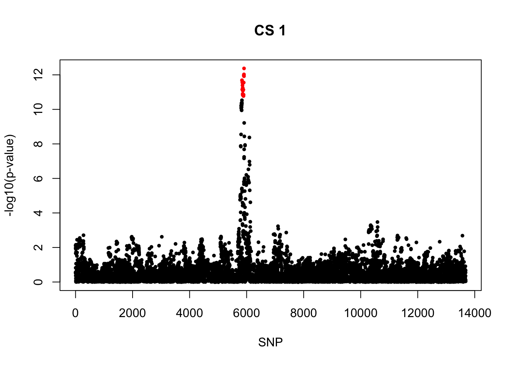
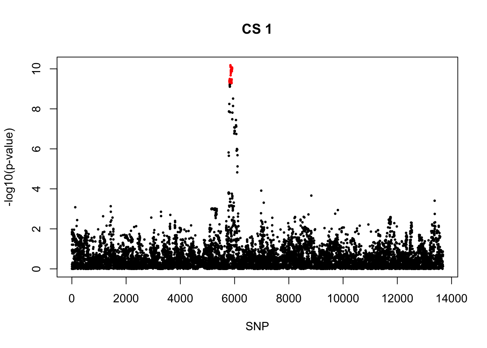

Last updated: 2024-06-20
Checks: 7 0
Knit directory: survival-data-analysis/
This reproducible R Markdown analysis was created with workflowr (version 1.6.2). The Checks tab describes the reproducibility checks that were applied when the results were created. The Past versions tab lists the development history.
Great! Since the R Markdown file has been committed to the Git repository, you know the exact version of the code that produced these results.
Great job! The global environment was empty. Objects defined in the global environment can affect the analysis in your R Markdown file in unknown ways. For reproduciblity it’s best to always run the code in an empty environment.
The command set.seed(20240324) was run prior to running the code in the R Markdown file. Setting a seed ensures that any results that rely on randomness, e.g. subsampling or permutations, are reproducible.
Great job! Recording the operating system, R version, and package versions is critical for reproducibility.
Nice! There were no cached chunks for this analysis, so you can be confident that you successfully produced the results during this run.
Great job! Using relative paths to the files within your workflowr project makes it easier to run your code on other machines.
Great! You are using Git for version control. Tracking code development and connecting the code version to the results is critical for reproducibility.
The results in this page were generated with repository version ed3b6e2. See the Past versions tab to see a history of the changes made to the R Markdown and HTML files.
Note that you need to be careful to ensure that all relevant files for the analysis have been committed to Git prior to generating the results (you can use wflow_publish or wflow_git_commit). workflowr only checks the R Markdown file, but you know if there are other scripts or data files that it depends on. Below is the status of the Git repository when the results were generated:
Ignored files:
Ignored: .DS_Store
Ignored: .Rhistory
Ignored: .Rproj.user/
Unstaged changes:
Deleted: analysis/logistic_gwas_asthma.Rmd
Deleted: analysis/susie_asthma_result.Rmd
Note that any generated files, e.g. HTML, png, CSS, etc., are not included in this status report because it is ok for generated content to have uncommitted changes.
These are the previous versions of the repository in which changes were made to the R Markdown (analysis/susie_asthma_result2.Rmd) and HTML (docs/susie_asthma_result2.html) files. If you’ve configured a remote Git repository (see ?wflow_git_remote), click on the hyperlinks in the table below to view the files as they were in that past version.
| File | Version | Author | Date | Message |
|---|---|---|---|---|
| Rmd | ed3b6e2 | yunqiyang0215 | 2024-06-20 | wflow_publish("analysis/susie_asthma_result2.Rmd") |
| html | a4d10d1 | yunqiyang0215 | 2024-06-20 | Build site. |
| Rmd | 706dd10 | yunqiyang0215 | 2024-06-20 | wflow_publish("analysis/susie_asthma_result2.Rmd") |
Coxph Susie result on all asthma/ AOA/ COA in UKBiobank.
library(survival)
library(susieR)
devtools::load_all("/Users/nicholeyang/Downloads/logisticsusie")ℹ Loading logisticsusieMarginal significant signals for COA, weak signals for AOA.
rs11071559_T was the one with smallest pvalue in all asthma, and PIP = 0.24. Carole’s paper also reported this one as the top signal. But in AOA, it’s not the one with smallest pval, the pip is a lot smaller.
region = "chr15_59000001_63400000"
res = readRDS(paste0("/Users/nicholeyang/Downloads/survivalsusie/result/asthma_self_report/result/all/fit.susie.", region, ".rds"))
gwas = readRDS(paste0("/Users/nicholeyang/downloads/survivalsusie/result/gwas_surv/all_gwas_", region, ".rds"))fit = res[[1]]
X = res[[2]]
print(res[[3]]) user system elapsed
48021.738 27994.163 4110.945 pip <- logisticsusie:::get_pip(fit$alpha)
effect_estimate <- colSums(fit$alpha * fit$mu)
pip.sorted = sort(pip, decreasing = TRUE)
pip.sorted[1:10] [1] 0.24346967 0.10867456 0.10424352 0.10165664 0.08854406 0.06504377
[7] 0.05878656 0.04595972 0.04407223 0.04344761class(fit) = "susie"
cs <- susie_get_cs(fit, X)
cs$cs
$cs$L1
[1] 428 438 442 444 446 453 454 455 460 478 480 482 485 490 492 497 498 499 501
$purity
min.abs.corr mean.abs.corr median.abs.corr
L1 0.7701707 0.9518411 0.965287
$cs_index
[1] 1
$coverage
[1] 0.9584117
$requested_coverage
[1] 0.95snps1 = colnames(X)[cs$cs$L1]
colors <- ifelse(rownames(gwas) %in% snps1, "red", "black")
plot(-log10(gwas[, "p.value.spa"]), col = colors, xlab = "SNP", ylab = "-log10(p-value)", cex = 0.8, pch = 20, main = "CS 1")
| Version | Author | Date |
|---|---|---|
| a4d10d1 | yunqiyang0215 | 2024-06-20 |
cbind(gwas[rownames(gwas) %in% snps1, ], pip[sort(cs$cs$L1)]) MAF missing.rate p.value.spa p.value.norm Stat
rs7183955_C 0.1857994 0 2.047135e-12 1.965395e-12 -686.9818
rs922783_G 0.1348981 0 7.063027e-12 6.654735e-12 -589.8232
rs12900122_T 0.1334614 0 2.805769e-12 2.621221e-12 -598.6492
rs12903966_T 0.1334992 0 2.479238e-12 2.313825e-12 -600.2511
rs16943087_G 0.1333576 0 4.033002e-12 3.778604e-12 -594.3751
rs2279294_C 0.1335081 0 1.268415e-11 1.199169e-11 -581.5727
rs2279293_G 0.1333651 0 1.466795e-11 1.388085e-11 -579.6246
rs2279292_C 0.1345950 0 5.626978e-12 5.290515e-12 -593.7446
rs8025689_C 0.1352865 0 8.350735e-12 7.879322e-12 -590.3153
rs12905602_A 0.1333781 0 7.234467e-12 6.809929e-12 -588.6392
rs11633029_C 0.1349144 0 1.688390e-11 1.601014e-11 -580.5839
rs11637671_G 0.1349347 0 1.629390e-11 1.544692e-11 -581.0378
rs11639084_T 0.1321305 0 1.409666e-11 1.332602e-11 -577.8021
rs10519067_A 0.1268612 0 2.796316e-12 2.598234e-12 -588.6569
rs10519068_A 0.1281122 0 1.097777e-12 1.012287e-12 -601.5405
rs11071557_C 0.1300621 0 1.018211e-12 9.399860e-13 -606.1218
rs34753162_C 0.1300892 0 9.385815e-13 8.658258e-13 -607.0330
rs34986765_C 0.1298710 0 1.199225e-12 1.108639e-12 -603.5777
rs11071559_T 0.1282230 0 4.231213e-13 3.864963e-13 -613.6394
Var z
rs7183955_C 9530.716 -7.036917 0.02401601
rs922783_G 7382.065 -6.864880 0.02646692
rs12900122_T 7320.864 -6.996668 0.05878656
rs12903966_T 7323.492 -7.014131 0.06504377
rs16943087_G 7324.006 -6.945224 0.04407223
rs2279294_C 7357.135 -6.780312 0.01930962
rs2279293_G 7353.770 -6.759145 0.01772081
rs2279292_C 7409.842 -6.897555 0.03527074
rs8025689_C 7446.700 -6.840725 0.02459909
rs12905602_A 7359.514 -6.861588 0.02795568
rs11633029_C 7423.555 -6.738435 0.01539183
rs11637671_G 7423.697 -6.743638 0.01567289
rs11639084_T 7294.842 -6.765053 0.01741284
rs10519067_A 7076.016 -6.997902 0.04595972
rs10519068_A 7120.226 -7.128826 0.10424352
rs11071557_C 7208.462 -7.139020 0.10165664
rs34753162_C 7207.339 -7.150309 0.10867456
rs34986765_C 7193.795 -7.116299 0.08854406
rs11071559_T 7143.786 -7.260208 0.24346967rm(res, gwas, X, fit)region = "chr15_59000001_63400000"
res = readRDS(paste0("/Users/nicholeyang/Downloads/survivalsusie/result/asthma_self_report/result/coa/fit.susie.", region, ".rds"))
gwas = readRDS(paste0("/Users/nicholeyang/downloads/survivalsusie/result/gwas_surv/coa_gwas_", region, ".rds"))fit = res[[1]]
X = res[[2]]
pip <- logisticsusie:::get_pip(fit$alpha)
effect_estimate <- colSums(fit$alpha * fit$mu)
class(fit) = "susie"
cs <- susie_get_cs(fit, X)
cs$cs
$cs$L1
[1] 399 402 404 412 413 414 418 420 421 422 427 438 442 444 446 453 454 455 460
[20] 478 480 482 485 490 492 497 498 499 501
$purity
min.abs.corr mean.abs.corr median.abs.corr
L1 0.9257579 0.9692791 0.9758275
$cs_index
[1] 1
$coverage
[1] 0.9594382
$requested_coverage
[1] 0.95snps1 = colnames(X)[cs$cs$L1]
colors <- ifelse(rownames(gwas) %in% snps1, "red", "black")
plot(-log10(gwas[, "p.value.spa"]), col = colors, xlab = "SNP", ylab = "-log10(p-value)", cex = 0.5, pch = 20, main = "CS 1")
| Version | Author | Date |
|---|---|---|
| a4d10d1 | yunqiyang0215 | 2024-06-20 |
cbind(gwas[rownames(gwas) %in% snps1, ], pip[sort(cs$cs$L1)]) MAF missing.rate p.value.spa p.value.norm Stat
rs1351544_T 0.1341295 0 4.461386e-10 3.713514e-10 -269.0891
rs1817479_C 0.1344601 0 3.808552e-10 3.158273e-10 -270.4024
rs8025324_A 0.1344176 0 3.725567e-10 3.087450e-10 -270.5693
rs16943064_A 0.1364784 0 5.377680e-10 4.518186e-10 -269.8478
rs9920526_T 0.1343697 0 3.189260e-10 2.631108e-10 -270.7226
rs9920610_C 0.1348054 0 4.116391e-10 3.422020e-10 -269.6961
rs9920560_A 0.1338591 0 5.835716e-10 4.889988e-10 -267.0437
rs9920592_T 0.1339444 0 5.579596e-10 4.670002e-10 -267.6067
rs9920593_T 0.1339534 0 5.553709e-10 4.647776e-10 -267.6369
rs1020730_T 0.1339552 0 5.392532e-10 4.509357e-10 -267.8550
rs7162065_A 0.1339407 0 4.841433e-10 4.036654e-10 -268.7056
rs922783_G 0.1351647 0 6.584186e-11 5.189163e-11 -283.4299
rs12900122_T 0.1337288 0 8.097954e-11 6.399853e-11 -280.9145
rs12903966_T 0.1337666 0 7.256387e-11 5.715275e-11 -281.6921
rs16943087_G 0.1336174 0 2.102903e-10 1.710490e-10 -274.5713
rs2279294_C 0.1337616 0 1.231272e-10 9.858842e-11 -278.7902
rs2279293_G 0.1336176 0 1.649137e-10 1.331822e-10 -276.7600
rs2279292_C 0.1348538 0 1.395559e-10 1.124347e-10 -278.9279
rs8025689_C 0.1355442 0 1.067680e-10 8.547625e-11 -281.4096
rs12905602_A 0.1336304 0 4.023675e-10 3.334537e-10 -270.7834
rs11633029_C 0.1351697 0 5.155685e-10 4.315266e-10 -270.2153
rs11637671_G 0.1351902 0 5.001905e-10 4.183294e-10 -270.4283
rs11639084_T 0.1323729 0 3.352193e-10 2.756701e-10 -270.8541
rs10519067_A 0.1271050 0 1.167764e-10 9.181477e-11 -273.8719
rs10519068_A 0.1283646 0 1.319142e-10 1.044645e-10 -273.9002
rs11071557_C 0.1303221 0 1.019793e-10 8.049745e-11 -277.2735
rs34753162_C 0.1303492 0 1.012173e-10 7.988084e-11 -277.3011
rs34986765_C 0.1301288 0 8.559017e-11 6.714989e-11 -278.1494
rs11071559_T 0.1284794 0 9.641085e-11 7.556718e-11 -276.4440
Var z
rs1351544_T 1844.440 -6.265617 0.02106368
rs1817479_C 1847.604 -6.290803 0.02338094
rs8025324_A 1847.817 -6.294323 0.02372920
rs16943064_A 1873.125 -6.234986 0.01829921
rs9920526_T 1835.440 -6.319088 0.02661092
rs9920610_C 1845.268 -6.278342 0.02221628
rs9920560_A 1841.711 -6.222595 0.01785386
rs9920592_T 1845.204 -6.229810 0.01827960
rs9920593_T 1845.178 -6.230558 0.01833191
rs1020730_T 1845.380 -6.235292 0.01864945
rs7162065_A 1846.851 -6.252604 0.01989128
rs922783_G 1863.667 -6.565405 0.09146328
rs12900122_T 1848.325 -6.534087 0.07795816
rs12903966_T 1848.987 -6.551001 0.08590416
rs16943087_G 1849.039 -6.385311 0.03510412
rs2279294_C 1857.237 -6.469100 0.05450854
rs2279293_G 1856.368 -6.423493 0.04278518
rs2279292_C 1870.557 -6.449210 0.04876977
rs8025689_C 1879.766 -6.490633 0.06000053
rs12905602_A 1857.793 -6.282368 0.02189398
rs11633029_C 1873.906 -6.242175 0.01838518
rs11637671_G 1873.945 -6.247031 0.01872130
rs11639084_T 1841.423 -6.311878 0.02482659
rs10519067_A 1786.345 -6.479848 0.05514732
rs10519068_A 1797.518 -6.460345 0.04934584
rs11071557_C 1819.845 -6.499668 0.05895974
rs34753162_C 1819.559 -6.500825 0.05941099
rs34986765_C 1816.117 -6.526889 0.06868704
rs11071559_T 1803.695 -6.509170 0.06395982rm(res, gwas, X, fit)region = "chr15_59000001_63400000"
res = readRDS(paste0("/Users/nicholeyang/Downloads/survivalsusie/result/asthma_self_report/result/aoa/fit.susie.", region, ".rds"))
gwas = readRDS(paste0("/Users/nicholeyang/downloads/survivalsusie/result/gwas_surv/aoa_gwas_", region, ".rds"))fit = res[[1]]
X = res[[2]]
pip <- logisticsusie:::get_pip(fit$alpha)
effect_estimate <- colSums(fit$alpha * fit$mu)
class(fit) = "susie"
cs <- susie_get_cs(fit, X)
cs$cs
NULL
$coverage
NULL
$requested_coverage
[1] 0.95rm(res, gwas, X, fit)
sessionInfo()R version 4.1.1 (2021-08-10)
Platform: x86_64-apple-darwin20.6.0 (64-bit)
Running under: macOS Monterey 12.0.1
Matrix products: default
BLAS: /usr/local/Cellar/openblas/0.3.18/lib/libopenblasp-r0.3.18.dylib
LAPACK: /usr/local/Cellar/r/4.1.1_1/lib/R/lib/libRlapack.dylib
locale:
[1] en_US.UTF-8/en_US.UTF-8/en_US.UTF-8/C/en_US.UTF-8/en_US.UTF-8
attached base packages:
[1] stats graphics grDevices utils datasets methods base
other attached packages:
[1] logisticsusie_0.0.0.9004 testthat_3.1.0 susieR_0.12.35
[4] survival_3.2-11 workflowr_1.6.2
loaded via a namespace (and not attached):
[1] Rcpp_1.0.8.3 lattice_0.20-44 prettyunits_1.1.1 ps_1.6.0
[5] rprojroot_2.0.2 digest_0.6.28 utf8_1.2.2 R6_2.5.1
[9] plyr_1.8.6 RcppZiggurat_0.1.6 evaluate_0.14 highr_0.9
[13] ggplot2_3.4.3 pillar_1.9.0 rlang_1.1.1 rstudioapi_0.13
[17] irlba_2.3.5 whisker_0.4 callr_3.7.3 jquerylib_0.1.4
[21] Matrix_1.5-3 rmarkdown_2.11 desc_1.4.0 devtools_2.4.2
[25] splines_4.1.1 stringr_1.4.0 munsell_0.5.0 mixsqp_0.3-43
[29] compiler_4.1.1 httpuv_1.6.3 xfun_0.27 pkgconfig_2.0.3
[33] pkgbuild_1.2.0 htmltools_0.5.5 tidyselect_1.2.0 tibble_3.1.5
[37] matrixStats_0.63.0 reshape_0.8.9 fansi_0.5.0 crayon_1.4.1
[41] dplyr_1.0.7 withr_2.5.0 later_1.3.0 grid_4.1.1
[45] jsonlite_1.7.2 gtable_0.3.0 lifecycle_1.0.3 git2r_0.28.0
[49] magrittr_2.0.1 scales_1.2.1 Rfast_2.0.6 cli_3.6.1
[53] stringi_1.7.5 cachem_1.0.6 fs_1.5.0 promises_1.2.0.1
[57] remotes_2.4.2 bslib_0.4.1 ellipsis_0.3.2 generics_0.1.2
[61] vctrs_0.6.3 tools_4.1.1 glue_1.4.2 purrr_0.3.4
[65] parallel_4.1.1 processx_3.8.1 pkgload_1.2.3 fastmap_1.1.0
[69] yaml_2.2.1 colorspace_2.0-2 sessioninfo_1.1.1 memoise_2.0.1
[73] knitr_1.36 usethis_2.1.3 sass_0.4.4